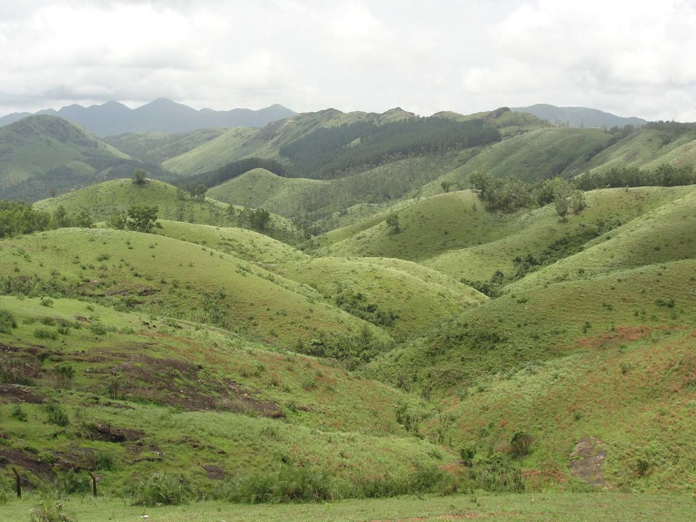

iduki
Idukki district is a densely forested, mountainous region in the south Indian state of Kerala. In the north, Anamudi mountain towers over Eravikulam National Park, where the rare, blue Neelakurinji flower blooms every 12 years. Nearby, Munnar is a hill station known for its sprawling tea plantations and Tea Museum. Farther south is the vast, curved Idukki Dam and Periyar National Park, a tiger and elephant rese
munnar

Munnar is a town and hill station located in the Idukki district of the southwestern Indian state of Kerala. Munnar is situated at around 1,600 metres (5,200 ft) above mean sea level,[2] in the Western Ghats mountain range. Munnar is also called the "Kashmir of South India" and is a popular honeymoon destination.
vagamon
Vagamon, also spelt Wagamon (വാഗമൺ), is an Indian hill station town primarily located in Peerumade taluk of Idukki district (majority area including Vagamon town), and also Meenachil taluk and Kanjirappally taluk of Kottayam district in the state of Kerala, India.[1]